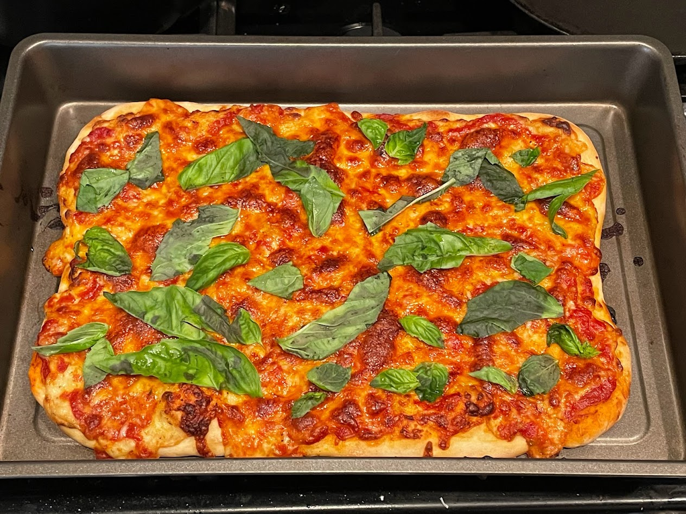

Pizza

Pizza with garlic sauce, cheese, artichoke hearts, onion, tomato, and olives
Simple pizza with marinara sauce, cheddar cheese, and basil
Ingredients
Dough
- Flour
- Water
- Yeast
- Salt
- Olive oil
Toppings
- Sauce (either pesto, storebought marinara sauce, or garlic bechamel sauce thickened with tons of parmesan cheese)
- Shredded cheddar/mozzarella cheese
- Anything else you want to put on your pizza
Instructions
Prepare dough as if you're making regular bread, except add a tiny bit of olive oil. Once it has risen, squich it and roll it into the shape of you pizza. Spread the sauce and throw on your toppings. To hold the pizza together, make cheese your first and last topping. Bake at 450F for around 10 minutes, until the cheese is nicely baked, the toppings are all soft, and the crust sounds hollow when tapped.